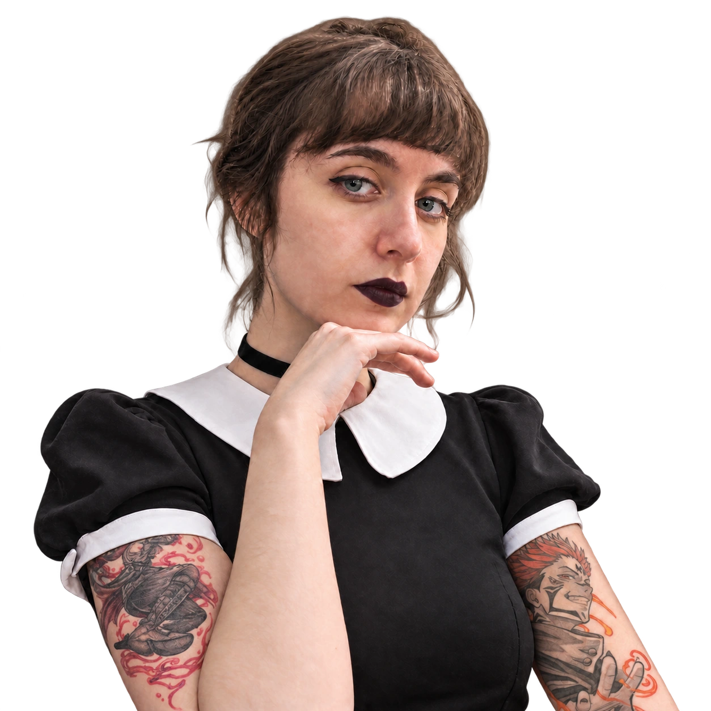
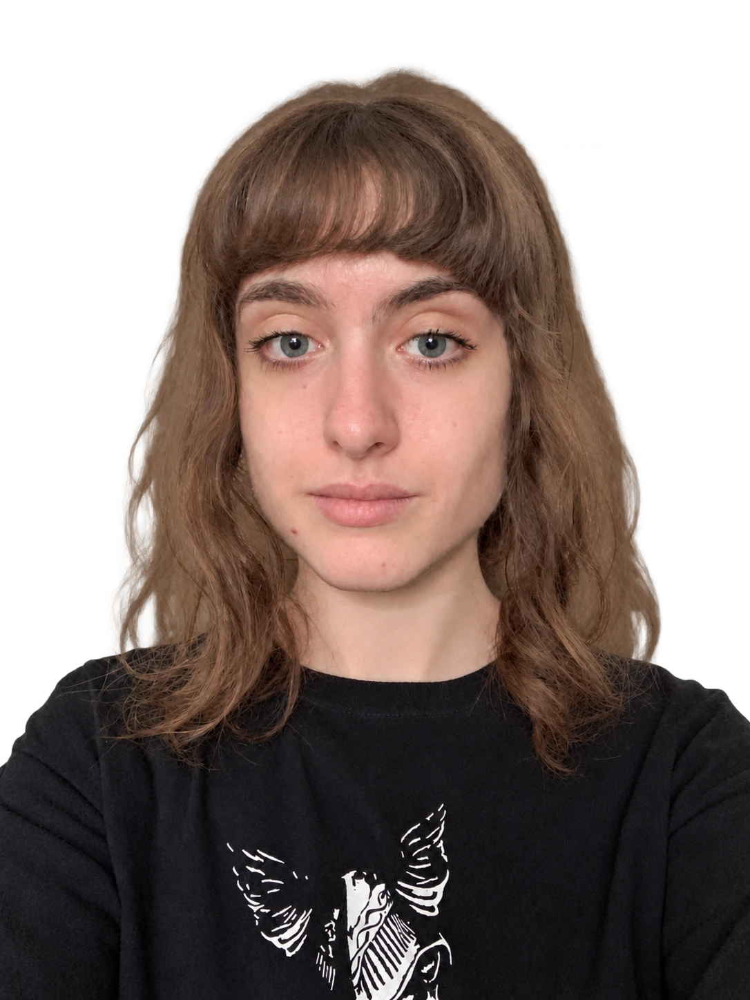

BRUNAFESTA.

Histórias
bem contadas.
Jornalista
e editora de vídeo.
Histórias para
ler, ver e ouvir.
Reportagens, crítica cultural e projetos
em texto, vídeo e áudio.
UM RECORTE DO PORTFÓLIO.
O arquivo.

Sou jornalista e editora de vídeo. Gosto de encontrar o fio da história, seja em uma notícia, em um jogo ou em alguns segundos de vídeo.
Formei-me em Jornalismo pela Universidade Presbiteriana Mackenzie e fiz pós-graduação em Jornalismo em Plataformas Digitais pela Faculdade Cásper Líbero. Hoje trabalho de forma autônoma com edição de vídeo, em uma trajetória que também passa pela redação jornalística, pela publicidade e pela comunicação corporativa.
Já escrevi sobre jogos e animes na Black&CO, desenvolvi textos e campanhas na Human Link e atuei em assessoria de imprensa na 2M e Associados e em comunicação institucional na FapUnifesp. Durante o meu estágio na CNN Brasil, participei da apuração de fatos e da cobertura das eleições de 2022.
CAMINHOS QUE FAZEM PARTE DA MINHA HISTÓRIA
Algumas histórias ficam conosco mesmo depois dos créditos.
- NA ESTANTE
- A Torre Negra Stephen King
- NO CONTROLE
- Soulsborne FromSoftware
- NO FONE
- Green Day & My Chemical Romance
- NO UNIVERSO DOS ANIMES
- Gilgamesh & Sukuna